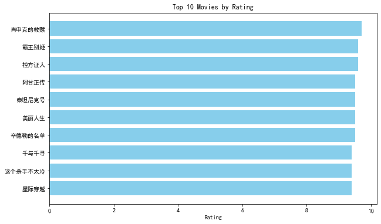

import pandas as pdimport matplotlib.pyplot as pltplt.rcParams['font.sans-serif'] = ['SimHei']# 读取CSV数据file_path ='douban_top250.csv'# 确保路径正确data = pd.read_csv(file_path)# 根据评分展示Top 10电影top10_rating = data.nlargest(10, 'rating') # 取评分最高的前10部电影plt.figure(figsize=(10, 6))plt.barh(top10_rating['title'], top10_rating['rating'], color='skyblue')plt.xlabel('Rating')plt.title('Top 10 Movies by Rating')plt.gca().invert_yaxis() # 翻转Y轴，使排名靠前的电影显示在顶部plt.show()

# 评分与投票数的散点图plt.figure(figsize=(10, 6))plt.scatter(data['votes'], data['rating'], alpha=0.7, color='coral')plt.title('Relationship between Votes and Rating')plt.xlabel('Number of Votes')plt.ylabel('Rating')plt.grid(True)plt.show()